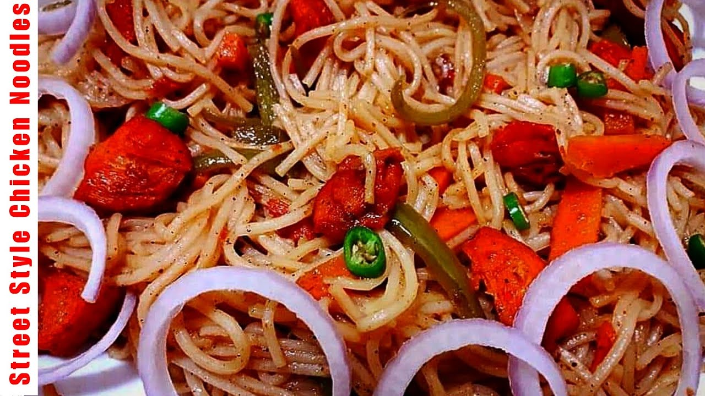

Golkonda was the principal capital of the Qutub Shahi kings.The inner fort contains ruins of
places,which rises about 130 meters high and gives a birds eye view of other buildings.
Golkonda fort is undoubtedly one of most magnificent fortress complexes in India.
Favourite Food

Instance noodles contain wax coating which is also used in styrofoam containers.That is why
instant noodles dont stick to each other when cooking.Our body needs up to two days to clean the
wax.Make sure you stop eating a pack of noodles for at least 3 days after a session of noodles.
This wax can cause CANCER.SHARE if you care.
Favourite Hero
Ghattamaneni Mahesh Babu is an Indian actor,producer,media personality, and philanthropist
who works mainly in telugu cinema.He has appeared in more than 25 films,and won several
accolades including,eight Nandi Awards,five Filmfare Telugu Awards and four SIIMA Awards.
Favourite Heroine
Sai Pallavi Senthamarai Kannam known professionally as Sai Pallavi,is an Indian actress
and dancer who works primarily in Tamil,Telugu and Malayalam films.She is regarded as one
of the most accomplished actresses in South Indian cinema.
Favourite Actress
Sowmya Sathyanarayana was better known by her stage name Soundarya,was an Indian actress
who worked in Telugu,Kannada,Tamil and Hindi films.She was regarded as one of the greatest
actresses in the history of Telugu Cinema.